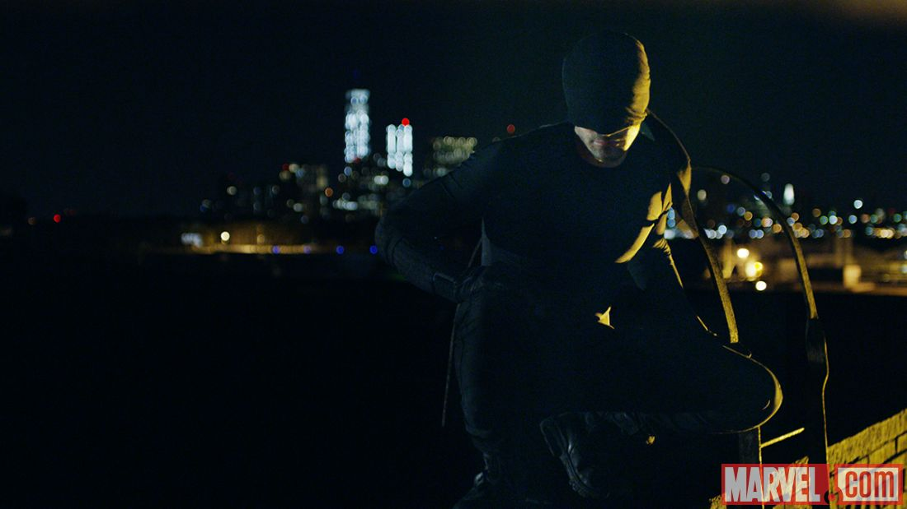
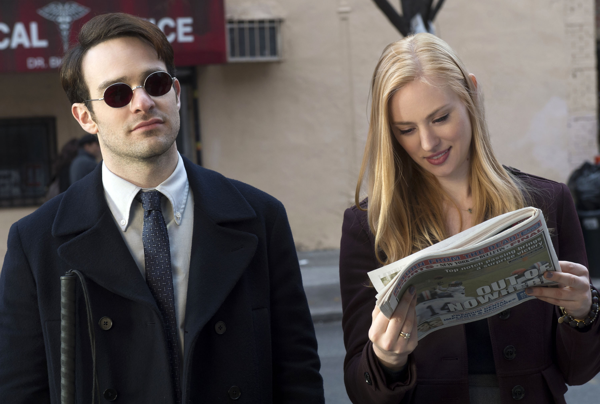
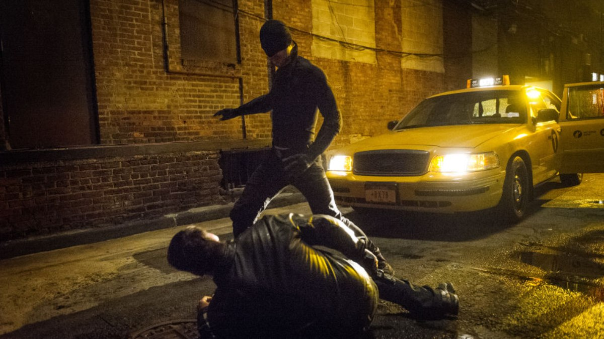

Daredevil
Marvel's Daredevil, or simply Daredevil, is an American web television series created for Netflix by Drew Goddard, based on the Marvel Comics character of the same name. It is set in the Marvel Cinematic Universe (MCU), sharing continuity with the films of the franchise, and is the first in a series of shows that will lead up to The Defenders crossover miniseries. Charlie Cox stars as Matt Murdock / Daredevil, a blind lawyer-by-day who fights crime at night. Daredevil entered development in late 2013, a year after the film rights to the character reverted to Marvel, with Goddard initially hired in December 2013. Filming takes place in New York City, in areas that still look like the old Hell's Kitchen.
Main Cast
Premise
The first season sees lawyer-by-day Matt Murdock use his heightened senses from being blinded as a young boy to fight crime at night on the streets of New York City's Hell's Kitchen neighborhood as Daredevil, while uncovering a conspiracy of the criminal underworld being led by Wilson Fisk. In the second season, Murdock continues to balance life as a lawyer and Daredevil, while crossing paths with Frank Castle / Punisher, a vigilante with far deadlier methods as well as the return of his old girlfriend—Elektra Natchios.
Episodes
Season 1(2015)
The first season of the American web television series Daredevil, which is based on the Marvel Comics character of the same name, follows the early days of Matt Murdock / Daredevil, a lawyer-by-day who fights crime at night, juxtaposed with the rise of crime lord Wilson Fisk. Charlie Cox stars as Murdock, while Vincent D'Onofrio plays Fisk. The two are joined by principal cast members Deborah Ann Woll, Elden Henson, Toby Leonard Moore, Vondie Curtis-Hall, Bob Gunton, Ayelet Zurer, and Rosario Dawson. The first two episodes of the season premiered in Los Angeles on April 2, 2015, with the full season of 13 episodes released on Netflix on April 10 to an estimated high viewership and critical acclaim.
Criminals, including the Russian mafia, Yakuza, and Chinese, have taken advantage of Hell's Kitchen's circumstances since "the incident". Blinded as a boy in an accident that gave him heightened senses, Matt Murdock begins fighting this rising criminal element by night as a costumed vigilante while opening a law firm with his friend, Foggy Nelson. Their first client is Karen Page, a secretary for construction company Union Allied, who has been framed for the murder of her co-worker, Daniel Fisher, after accidentally uncovering a pension embezzlement scheme.
When Murdock was a boy, his father was murdered for winning a match he was told to throw. Now, after failing to rescue the kidnapped boy, a severely injured Murdock is found in a dumpster by nurse Claire Temple. Nelson meanwhile attempts to comfort Page following her recent traumatic experiences. Temple takes Murdock to her apartment, tends to his wounds, and removes his mask, discovering his blindness.
Wesley, having become aware of Nelson and Murdock because of their involvement with Page during the Union Allied scandal, hires them to defend John Healy, an assassin. Though Nelson wishes not to get involved with an obvious criminal element, Murdock wishes to use the case to discover who Wesley's employer is, and so accepts Wesley's offer, which includes a substantial sum to ensure their silence.
Murdock is unable to find any record of Fisk, and so continues to interrogate criminals, searching for answers. Wesley informs the Ranskahovs of an offer Fisk has made to help with their operations, given their recent failures. Angered at this apparent slight, they attempt to stop the man in black once and for all by visiting in hospital the Russian whom Murdock threw from the roof.
Fisk explains the situation to his allies, including Chinese leader Madame Gao, of whom he asks a special favor. Elena Cardenas, a renter of powerful businessman Armand Tulley, comes to Nelson and Murdock after Tulley, who wants to convert her apartment building, sends men to wreck her home.
Murdock takes out the police when they try to kill Vladimir on Fisk's orders, and he takes Vladimir to an abandoned warehouse, hoping for answers about Fisk, while Nelson and Cardenas are injured in the bombings. With Temple's help, Murdock cauterizes Vladimir's wounds, alerting a non-corrupt police officer to their presence. The officer calls in Murdock and Vladimir's location, and the warehouse is soon surrounded.
After a brutal fight, Murdock defeats Fisk and leaves him to the police. With Fisk arrested, Marianna leaves the city. Murdock, Page, and Nelson celebrate their success and resume their work. The vigilante is named "Daredevil" by the media.
Season 2
The series was renewed for a second season of 13 episodes on January 17, 2016. It will film back-to-back with Marvel's The Defenders, with the potential for overlap between the two productions. In July 2016, Netflix COO Ted Sarandos stated that the season would not debut until 2018 at the earliest, after The Defenders released in 2017.